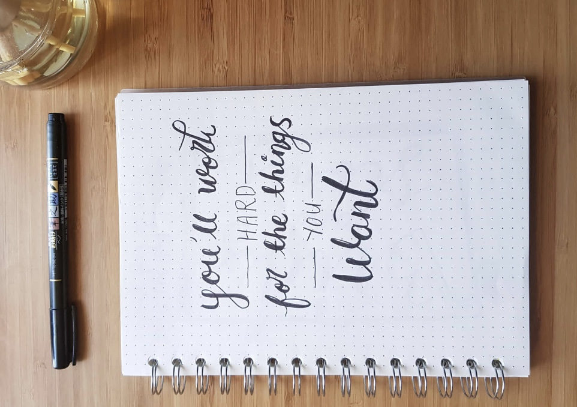

Choose a Journal
Choose a journal. It fully depends on how you like your writing styles. You may want to do it on pages of lines or dots or unlined. If you want to do it online, you can use a journalling app to keep track.
Journalling provides a safe space to spill out your thoughts. It is where you can confess your secrets or fears without having to be judged by someone else. This concept can really clear out your head and it will feel really good once you put it down on paper. Journalling can be really helpful if you struggle with stress or anxiety and it can really improve your mental wellbeing.
Here are some benefits when you start your journal:
Keeping journals can help you create order in your little world. You can view writing time as a some sort of relaxing time. This can help you track your problems and concerns and also give opportunities for a positive mind set.
Without a further ado, let's begin the steps.
Choose a journal. It fully depends on how you like your writing styles. You may want to do it on pages of lines or dots or unlined. If you want to do it online, you can use a journalling app to keep track.
Believe it or not, having a place to sit down with a relaxing environment can do you wonders. Whether if you like to sit by the window or light a candle in the dark, choose a setting that appeals to you so you can focus on your writing.
Start by writing down the date. Then you can begin by writing a sentence about your mood and how you day feels. Try to engage in your writing freely, don't worry about your grammar or punctuations.
You can write down about how your day went and what events have occured. You can choose a topic and write about it. It is your choice, the art of journalling is that you are free to do anything without feeling judged. Like a comfort spot.
Write about how you can make the future better. Setting goals can give a daily challenge and a sense of accomplishment. Focusing on the positives can really lift up your spirits and make you look forward to things.
Summarise on your journal entry. Reflect on what you have written. This can help you ask questions about yourself, emotions and events. Think "What can I learn from this experience?" and evaluate your conclusion to finish your entry.
There are some challenges when it comes to journalling and I'll give you advice on how to overcome those obstacles.
You may come across writer's block, where you suddenly get a mind blank and you just stare at your entry unsure of what to write. In order to get over that, change of scenery might help you think of something. Maybe listening to music might help. Maybe you might need to use prompts. You can also make a routine so your brain can automatically responsive to making ideas in writing during those periods.
Especially when you share livings spaces with others, if you think that you have to worry about your privacy getting leaked out to those around you then here are some tips. Try to find a nice and secure locations where you can hide your journal like a personal drawer. Online journals are more recommended if you're worried about some finding your journal. Try using an app which enables a passcode to keep your journal entries safe.
If you fear that you do not have enough time to write your thoughts in a journal then worry not, there are still options that can still work out for you. You can write once a week rather than daily and write in bullet points rather than long sentences. Use a gratitude journal, it wouldn't ask too much from you other than the things you feel gratitude for.
There are so many ways to journal. If you feel that writing sentences does not resonate with you then try using a different journalling method. You can draw pictures illustrating your day instead or write events in bullet points.
You're not! Believe me. Sometimes thoughts like these can be really demotivating, don't be embarassed if you feel like that you're missing something. Journalling is not perfect, it will just flow out of your mind how you desire it. If you have days that you have nothing you can think of writing about, come back another time! Be kind to yourself and practice self love.
Journalling prompts are pretty useful when writing down entries. Here are some journalling prompts to think of that can help you get started: